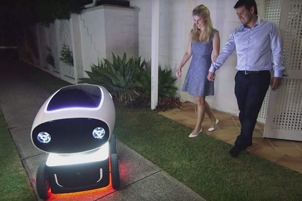

En Nueva Zelanda prueban a repartir pizzas con robots
- Quiere llevarlo a cabo con vehiculos robotizados llamados DRU.
- Utilizan GPS para desplazarse por la ciudad y llegar hasta los destinos de los clientes a una velocidad máxima de 18 kilómetros por hora.
El Gobierno de Nueva Zelanda negocia con Domino's Pizza para hacer en el país las pruebas con los vehículos autónomos que esta cadena ha desarrollado para hacer el reparto de pizzas a domicilio, informaron fuentes oficiales.
Cómo funciona
Estos vehículos, llamados DRU, tienen compartimentos para las pizzas y las bebidas, y utilizan GPS para desplazarse por la ciudad y llegar hasta los destinos de los clientes a una velocidad máxima de 18 kilómetros por hora.
El país oceánico ha sido uno de los primeros considerados por la empresa para probar los prototipos de estas unidades robóticas.
El ministro neozelandés de Transporte, Simon Bridges, destacó en un comunicado que la elección de Nueva Zelanda "muestra que tenemos los marcos adecuados para atraer innovaciones".
Qué dice la ley
Bridges aseguró que las leyes y marcos de regulación actuales hacen de Nueva Zelanda un "entorno ideal" para hacer pruebas con todo tipo de tecnologías. El ministro recordó que en el último año el ejecutivo ha aprobado una regulación para el uso de vehículos aéreos autónomos y ha revisado las leyes de vehículos sin conductores.
Domino's, que ha realizado pruebas en Australia de forma semiautónoma, también espera comenzar a utilizar estos vehículos en Brisbane, informó por su parte el diario "The Australian".
